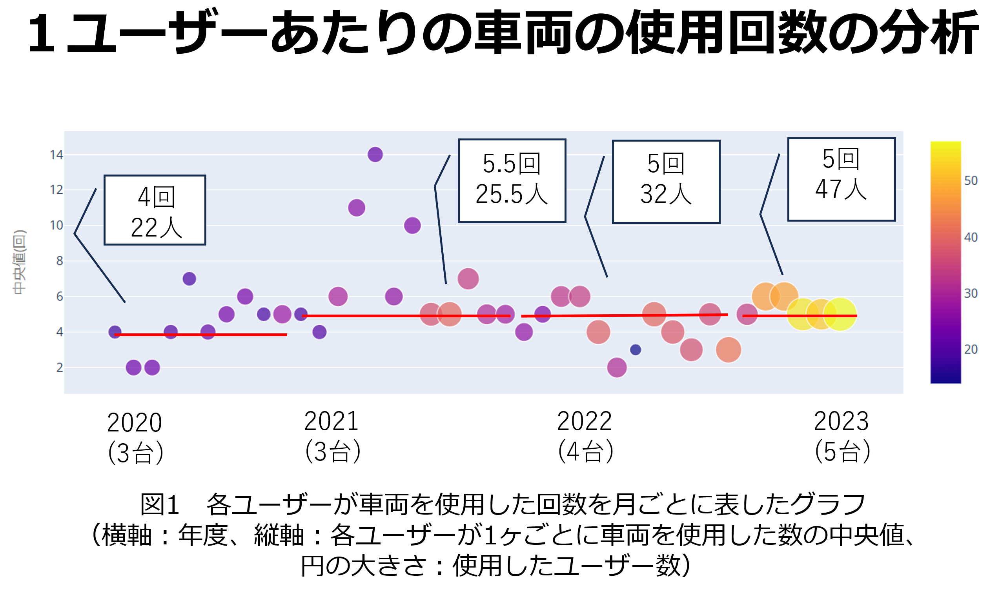
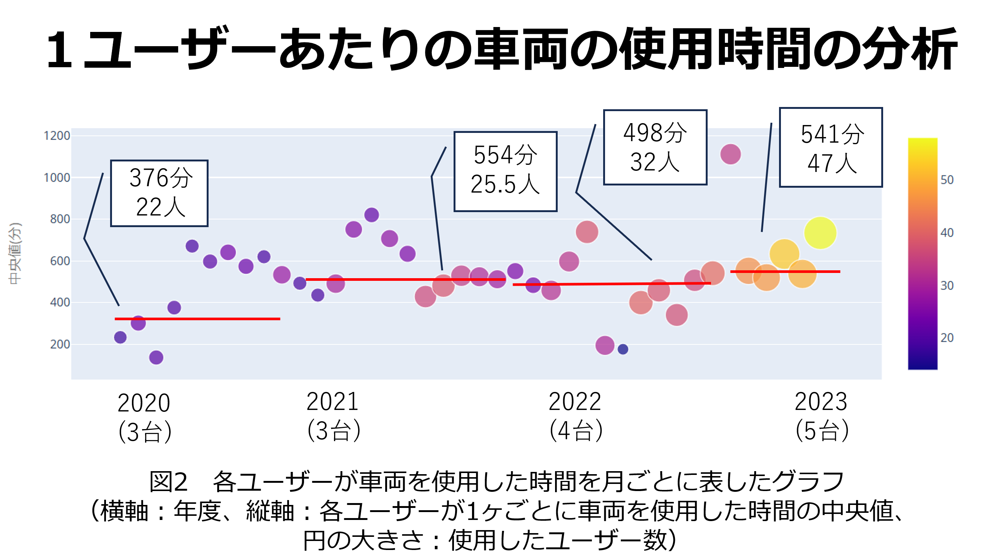
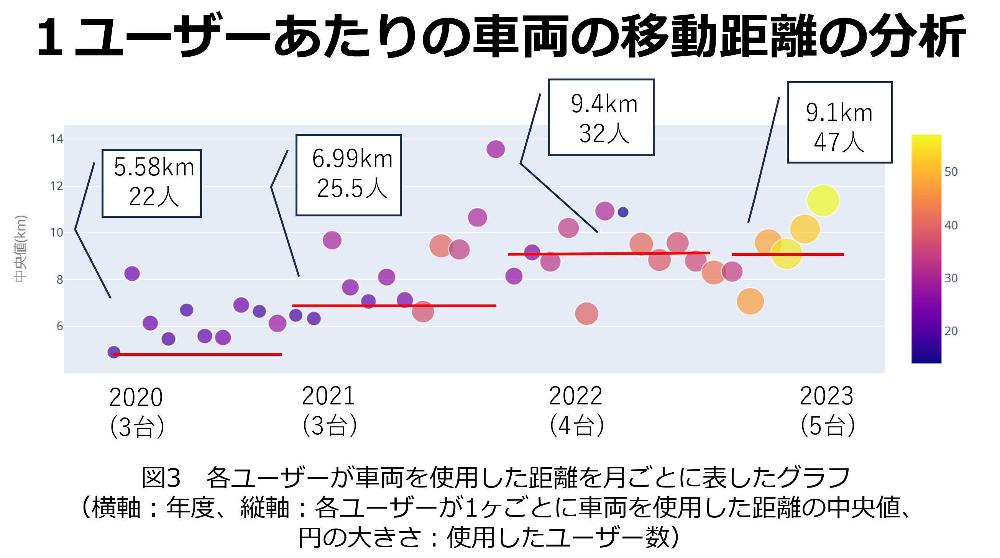

乗り捨て可能型カーシェアリングサービス
『ECO Ride Shinshu』
概要
これはHTMLによって編集された資料なため，ホームページにて表示することができます。ホームページ形式で見る場合には，次のURLリンクをクリックしてください。
乗り捨て可能型カーシェアリングサービス: https://iseglock17.github.io/SmartMobility/
背景･課題
背景
我々が所属している信州大学工学部の実証的ソフトウェア工学研究室では、NAIST（奈良先端科学技術大学院大学）で実証実験として行われているオークション形式のカーシェアリングシステムを分析する研究を行っています。その形式を長野市に応用することで、長野市に存在しているいくつかの課題を解決できるのではないかと思い、今回の提案に至りました。
NAISTのカーシェアリングシステム
奈良先端科学技術大学院大学（ＮＡＩＳＴ）にて行われている実証的なカーシェアリングです。これは，信州大学実証的ソフトウェア工学研究室の畑秀明先生を中心に，自動車用の後付可能なスマートロック及び電気自動車用普通充電器を開発・販売する株式会社ジゴワッツ（代表取締役社長：柴田知輝，以下ジゴワッツ），ブロックチェーン技術研究開発のa42株式会社（代表取締役：守屋英義，橘博之，以下a42）の協力のもと，決められた駐車場であれば，どこへでも容易に自動車を返却できるうえ，自律的に有効な管理運用が果たせる「乗り捨て可能カーシェアリング」システム実現のための実証実験でもあリます。
この「乗り捨て可能カーシェアリングシステム」は，公共交通機関が少ない地方の交通事情を補完する新たな交通手段として期待されています。今回の実験では，ジゴワッツが開発する電気自動車用普通充電器「Ella」とスマートフォンで開錠・施錠ができるスマートロック「バーチャルキー」を活用し，a42がブロックチェーン上での自動車の使用権管理を含む自律的な管理運用を目指す実験システムを開発しました。
具体的には、どこで自動車を必要としているかという需要を可視化し、それに応じた好ましい返却行動に報酬を与えるというインセンティブ（動機付け）設計により、ユーザ間で自動車を効率的に回送することで乗り捨てを可能にするなど、自律的なシステムの実現を目指しています。実験中にメカニズム（ルール）を適宜変更・調整して好ましい設計を探っています。
現在，5台の電気自動車と，キャンパス内3か所ATR付近1か所に専用駐車場を用意しており，大学内またはATR付近の駐車場での乗り捨てが可能となっています。2020年6月からテスト運用を開始しており，これまでの登録ユーザは学内の学生・教職員，ATRの職員の約150人です。既に大学近辺での活発な移動が見られています。
以下に2023年10月のログデータ（入札回数，移動先の分布）を示します。


出典: NAIST Mobility actioN 10月の使用状況
[https://naist-carshare.github.io/logs/2023-11-01-log-202310/]
図1は20分単位の各時間帯への一ヶ月間の入札回数をグラフにしたものです．10月の総入札回数は1648回で，過去最高入札回数を超えています．全ての時間帯に入札がありました．
図2は一ヶ月間の車両5台全ての移動を可視化したヒートマップです．滞在した頻度が高いほど赤く，頻度が低いほど黄色く示しています．
-
NAIST Mobility actioN [公式ＨＰ]
[https://naist-carshare.github.io/]
-
｢信州大産｣電力でＥＶシェア構想 乗りたい人のオークション形式で実験へ [信濃毎日新聞デジタル]
[https://www.shinmai.co.jp/news/article/CNTS2022010900118]
長野市に存在している課題
大きく，以下の課題が挙げられます。
若者が車を持つハードルが高い
若者（19〜25歳の特に学生を想定）はそれ以上の世代に比べて車を持つことが難しい状況にあります。理由として，経済的自立性が乏しいため車の維持費（燃料・保険料・車検代等）を払えないことや駐車場の確保が難しいことが挙げられます。
本提案の主なターゲットである信州大学生は特に，県外出身者が75%ということも相まって更に車を所持するハードルが高くなります。
公共交通機関だけでは行けない所がある
長野市において，公共交通機関では行き得ない場所は多く存在しています。少し離れた大きめのスーパーや，美味しくてオシャレな穴場のカフェであったりと，自家用車があればサクッと行けますが非車所有者にとっては苦労して辿り着かなければなりません。
そのような場合，ターゲットである若者や観光客にとっては、ちょっとした行き先でもタクシーを利用して割高な料金を払わなければなりません。地域住民より活動力があったとしても、機会を失うのはとても勿体ないことです。
レンタカーを借りる手間が大きい
上記の問題を解決する手段として、自由に・必要な時に車を利用できて小回りのきくレンタカーやタクシーを利用する事が考えられます。
しかし，”手続きの面倒さ”,"車を返却しなければならない","短時間では非効率な値段設定"等の理由で，今回想定している数時間の利用に対してレンタカーを借りるにはあまり向いていないと考えられます。
タクシーを利用するにも，"運転手と関わらなければならない","目的地との往復で2回利用しなければならない"等の，不向きな理由があります。
公開資料から分かる課題

図３は平成29年度長野市公共交通網形成計画から参照した資料です。[https://www.city.nagano.nagano.jp/documents/574/124625.pdf]
この資料から、やはり長野市を移動するには公共交通機関の代表でもあるバスより自動車の需要が高い事が伺えます。もちろん，バスにおいても「料金が安い」「タイムスケジュールに則った運行」等の独自の長所はありますが、本提案で重視する自由性においてはやはり自動車の方が便利であると言えるのではないでしょうか。

図４は令和４年度長野市地域公共交通計画から参照した資料です。[https://www.city.nagano.nagano.jp/documents/5129/kotukeikaku.pdf]
この表は、年代別の1人あたりのトリップ数（通勤や買い物などの目的を持って移動する回数）を表しています。ここから若者と見られる20-24歳の部分に着目すると80歳以上を除く全ての世代の中でトリップ数が一番低い事が分かります。
私たちはこの20-24歳の移動を支援する事で、トリップ数の増加につながり、最終的に長野市全体の人の往来や経済が活性化するのではないかと考えています。
サービスの内容
サービスの概要
ユーザーは車を利用したい12時間前までに予約（予約システムを参照）を確定し、その内容に則った利用をしてもらいます。 ユーザーは乗り捨てが可能になっており、予約の際に入力した降車予定ステーションから最大半径2km以内であれば、提携先の駐車場に限りどこにでも乗り捨てる事が可能です。
乗り捨てられた車は、コミュニティユーザーが回収し，次の利用開始予約地点まで回送します。その際に報酬を渡すことで、 コミュニティユーザーに自律的な回送を促し、サービスのサステナビリティの向上，また地域住民が参加することによるサーキュラシティの実現に繋がると考えています。
サービス内容として，サービスプランを会員用のプランとビジター用のプランで分けています。プランを分ける事で、ターゲットである地域住民と観光客どちらにも利用してもらえるよう工夫をしています。 会員とビジターのサービスプランの違いにつきましては「料金設定」に記載があります。
自動車
自動車は，EV車を導入します。EV車は，環境に優しいこと，燃料費が安いこと，メンテナンス費が安いことなどから，EV車を導入することとしました。 EV車は，サービス開始時点では，2台を想定しています。
ステーション
このサービスにおけるステーションは駅のことではなく、カーシェアで利用する専用車を配置する場所のことを指します。 このカーシェアリングには専用ステーションが存在しており，乗り始めは専用ステーションから限定です。 ステーションは，サービス開始時点では，3カ所を想定しており，それぞれ信州大学工学部キャンパス，長野駅，信州大学教育学部キャンパスの付近またはその敷地内に設置します。 各ステーションにはEV車専用の駐車場兼、充電施設が設置されており，EV車の充
ユーザーが増えることで，需要に沿ってステーションを拡充することも可能性として考えられます。
降車の条件
車の利用者は，予約時に「乗り捨てをする」か「ステーションに返却をする」を選択します。
ステーションに返却する場合
ユーザーはサービスの利用後、予約時に入力した「降車予定ステーション」に車を返却します。 ステーションに返却した場合、ユーザーには条件に応じて次月会員費の割引を実施します。詳細は「料金設定」に記載があります。
乗り捨てをする場合
ユーザーはサービスの利用後、予約時に入力した「乗り捨て予定エリア」内の提携先駐車場のどこにでも乗り捨てる事ができます。
乗り捨て可能エリア：各ステーションから半径２kmメートル圏内となっており、予約時でステーションを選択することでそのエリアを「乗り捨て予定エリア」とします。 （例：予約時に「信州大学工学部ステーション」を指定→「信州大学工学部ステーション」から半径２km圏内が乗り捨て可能エリアとなる）
提携先の駐車場
乗り捨てエリア内の提携先駐車場として、飲食店やコンビニエンスストアなどの駐車場付き店舗を利用することを考えています。 提携していただくためには交渉が必要不可欠であり、「駐車場」で説明している条件を提示することで駐車場を利用する契約を結ばせていただく計画です。
乗り捨て車の回収・回送
回収・回送する人は会員であるコミュニティーユーザーを想定しています。
回収・回送方法の詳細につきましては以下に回収・回送例を図で提示した上で説明を記載しています。
⓪回収ユーザーが回収用自転車を利用するために最寄りステーションに向かう（別に自転車を使わなくてもいい）。直接向かうことも可能。
①回収用自転車を利用して乗り捨てられた車を回収しに向かう。
②車に自転車を乗せ、次の予約された出発予定ステーションまで回送する。（このときに回収費が回収ユーザーに支払われます。）
③①で利用した回収用自転車で最寄りステーションまで向かい、自転車を返却する。（このときに返送費が回収ユーザーに支払われます。）
④自宅への帰宅
予約システム
サービス利用者の予約詳細
予約は利用する一週間前から可能で，使用の12時間前には予約が確定されます。 予約が確定された時点で使用時間に対する料金が支払われる想定です。 走行距離に応じた料金も発生しますが，それは利用終了時点で確定します。
予約では，「利用開始ステーション」，「利用時間（何時から何時まで）」，「乗り捨てするか否か」， 乗り捨てする場合は「乗り捨て予定エリア」，ステーションに返却する場合は「降車予定ステーション」を設定してもらいます。
予約された時間の利用終了予定時間の後は、乗り捨てられた車を戻す時間も考慮して時間を回収時間（または猶予時間）として確保します。 基本的には利用後１時間、車がステーション返却され次の利用が同ステーションである場合は利用後30分を確保します（図5に示す）。
乗り捨て車回収者の予約詳細
ユーザーは常に図5のように予約状況を確認できる状況にあります。
ユーザーに回収する意思があれば，図の空白時間内で回送できるように、利用者の利用終了2時間前までに回収・回送予約をします。 回収の詳細については「リンク」。
予約キャンセル時の対応
確定後にキャンセルした場合，返金対応は以下の通りになっています。
| キャンセル時の状況 | 返金割合 |
|---|---|
| 12時間前まで | 100％ |
| 6時間前まで | 40％ |
| 2時間前まで | 15％ |
| 2時間前以降 | 0％ |
※予約時刻通りに車が使用出来ない場合は，即時ユーザーに通知が行われ，キャンセルを申し込まれた際の返金対応は100％としています。
参考動画
サービス説明用
https://drive.google.com/file/d/1rGEbsygvUFMrRi7W2_5ZyHx3FspNorkO/view?usp=drive_link
利用範囲説明動画
https://drive.google.com/file/d/1uzMMHDpZ0o-ys2ZT9sTAHhMMOGxVDlbr/view?usp=drive_link
上記の動画は簡易的に作ったものなので，実際に説明用に使うものでは，WonderShareの透かしは入りません。
料金設定
料金設定概要
料金は，一般会員料金と観光客向けの非会員料金とで分ける。このとき，一般会員料金の方が乗車賃を安く設定し，非会員においては乗車賃を高く設定することとする。
一般会員料金は，会費月額2000円をユーザーから徴収し，かつ乗車賃を取ることにする。乗車賃は，まず距離に対して1kmごとに12円を取り，占有時間に対して，長時間逓増型で徴収することにする。
観光客などのコミュニティ外のユーザーに対しては，会費を必要とせず利用が可能であるため，乗車賃が高くなるように設定することで，コミュニティ内のユーザーに対しての利用を促すこととする。
$$(一般会員料金) = 2000[円/月] + \left(乗車賃 \right)$$
$$(非会員料金) = \left(乗車賃 \right)$$
$$(乗車賃) = (普通時間料金) + (延滞時間料金) + (距離料金) + (乗り捨て料)$$
※(延滞時間料金)，(乗り捨て料)はそれぞれ延滞，乗り捨てが発生した場合に徴収する。
一般会員料金一覧
| 一般会員 | 距離[km] | 1 | 2 | 3 | 4 | 6 | 8 | 10 | 15 | 20 | 30 | 40 | 60 | 80 | 100 | |||||||
| 基本料金[円] | 賃率[円/h] | 利用時間[h] | 料金[円] | 加算額[円] | 12 | 24 | 36 | 48 | 72 | 96 | 120 | 180 | 240 | 360 | 480 | 720 | 960 | 1200 | 延滞時賃率[円/h] | 延滞例1 | ||
| 50 | 250 | 0.25 | 110 | 122 | 134 | 146 | 158 | 182 | 206 | 230 | 290 | 350 | 470 | 590 | 830 | 1070 | 1310 | 750 | 0.75時間から延滞 | |||
| 15分刻み | 0.5 | 180 | 192 | 204 | 216 | 228 | 252 | 276 | 300 | 360 | 420 | 540 | 660 | 900 | 1140 | 1380 | 15分刻み | |||||
| 0.75 | 240 | 252 | 264 | 276 | 288 | 312 | 336 | 360 | 420 | 480 | 600 | 720 | 960 | 1200 | 1440 | 240 | ||||||
| 500 | 1 | 300 | 312 | 324 | 336 | 348 | 372 | 396 | 420 | 480 | 540 | 660 | 780 | 1020 | 1260 | 1500 | 30分刻み | 430 | ←0.25時間延滞分 +750*0.25 の四捨五入 | |||
| 30分刻み | 1.5 | 550 | 562 | 574 | 586 | 598 | 622 | 646 | 670 | 730 | 790 | 910 | 1030 | 1270 | 1510 | 1750 | 800 | ←0.5時間延滞分 +750*0.5 の四捨五入 | ||||
| 2 | 800 | 812 | 824 | 836 | 848 | 872 | 896 | 920 | 980 | 1040 | 1160 | 1280 | 1520 | 1760 | 2000 | 1180 | ||||||
| 2.5 | 1050 | 1062 | 1074 | 1086 | 1098 | 1122 | 1146 | 1170 | 1230 | 1290 | 1410 | 1530 | 1770 | 2010 | 2250 | 1550 | ||||||
| 1000 | 3 | 1300 | 1312 | 1324 | 1336 | 1348 | 1372 | 1396 | 1420 | 1480 | 1540 | 1660 | 1780 | 2020 | 2260 | 2500 | 1500 | 1930 | ||||
| 1時間刻み | 4 | 2300 | 2312 | 2324 | 2336 | 2348 | 2372 | 2396 | 2420 | 2480 | 2540 | 2660 | 2780 | 3020 | 3260 | 3500 | 1時間刻み | 3430 | ←1時間延滞分 +1500*1の四捨五入 | |||
| 5 | 3300 | 3312 | 3324 | 3336 | 3348 | 3372 | 3396 | 3420 | 3480 | 3540 | 3660 | 3780 | 4020 | 4260 | 4500 | 4930 | ||||||
| 1500 | 6 | 4300 | 4312 | 4324 | 4336 | 4348 | 4372 | 4396 | 4420 | 4480 | 4540 | 4660 | 4780 | 5020 | 5260 | 5500 | 2250 | 6430 | ||||
| 7 | 5800 | 5812 | 5824 | 5836 | 5848 | 5872 | 5896 | 5920 | 5980 | 6040 | 6160 | 6280 | 6520 | 6760 | 7000 | 1時間刻み | 8680 | ←1時間延滞分 +2250*1の四捨五入 | ||||
| 8 | 7300 | 7312 | 7324 | 7336 | 7348 | 7372 | 7396 | 7420 | 7480 | 7540 | 7660 | 7780 | 8020 | 8260 | 8500 | 10930 | ||||||
| 9 | 8800 | 8812 | 8824 | 8836 | 8848 | 8872 | 8896 | 8920 | 8980 | 9040 | 9160 | 9280 | 9520 | 9760 | 10000 | 13180 | ||||||
| 2000 | 10 | 10300 | 10312 | 10324 | 10336 | 10348 | 10372 | 10396 | 10420 | 10480 | 10540 | 10660 | 10780 | 11020 | 11260 | 11500 | 3000 | 15430 | ||||
| 11 | 12300 | 12312 | 12324 | 12336 | 12348 | 12372 | 12396 | 12420 | 12480 | 12540 | 12660 | 12780 | 13020 | 13260 | 13500 | 1時間刻み | 18430 | |||||
| 4時間刻み | 12 | 14300 | 14312 | 14324 | 14336 | 14348 | 14372 | 14396 | 14420 | 14480 | 14540 | 14660 | 14780 | 15020 | 15260 | 15500 | 21430 | |||||
| 16 | 22300 | 22312 | 22324 | 22336 | 22348 | 22372 | 22396 | 22420 | 22480 | 22540 | 22660 | 22780 | 23020 | 23260 | 23500 | 33430 | ←4時間延滞分 +2250*4の四捨五入 | |||||
| 20 | 30300 | 30312 | 30324 | 30336 | 30348 | 30372 | 30396 | 30420 | 30480 | 30540 | 30660 | 30780 | 31020 | 31260 | 31500 | 45430 | ||||||
| 24 | 38300 | 38312 | 38324 | 38336 | 38348 | 38372 | 38396 | 38420 | 38480 | 38540 | 38660 | 38780 | 39020 | 39260 | 39500 | 57430 | ||||||
| 28 | 46300 | 46312 | 46324 | 46336 | 46348 | 46372 | 46396 | 46420 | 46480 | 46540 | 46660 | 46780 | 47020 | 47260 | 47500 | 69430 | ||||||
| 32 | 54300 | 54312 | 54324 | 54336 | 54348 | 54372 | 54396 | 54420 | 54480 | 54540 | 54660 | 54780 | 55020 | 55260 | 55500 | 81430 | ||||||
| 36 | 62300 | 62312 | 62324 | 62336 | 62348 | 62372 | 62396 | 62420 | 62480 | 62540 | 62660 | 62780 | 63020 | 63260 | 63500 | 93430 | ||||||
| 40 | 70300 | 70312 | 70324 | 70336 | 70348 | 70372 | 70396 | 70420 | 70480 | 70540 | 70660 | 70780 | 71020 | 71260 | 71500 | 105430 | ||||||
| 乗り捨て料[円] | 44 | 78300 | 78312 | 78324 | 78336 | 78348 | 78372 | 78396 | 78420 | 78480 | 78540 | 78660 | 78780 | 79020 | 79260 | 79500 | 117430 | |||||
| 350 | 48 | 86300 | 86312 | 86324 | 86336 | 86348 | 86372 | 86396 | 86420 | 86480 | 86540 | 86660 | 86780 | 87020 | 87260 | 87500 | 129430 |
非会員料金一覧
| 非会員料金 | 距離[km] | 1 | 2 | 3 | 4 | 6 | 8 | 10 | 15 | 20 | 30 | 40 | 60 | 80 | 100 | |||||||
| 基本料金[円] | 賃率[円/h] | 利用時間[h] | 料金[円] | 加算額[円] | 15 | 30 | 45 | 60 | 90 | 120 | 150 | 225 | 300 | 450 | 600 | 900 | 1200 | 1500 | 延滞時賃率[円/h] | 延滞例1 | ||
| 300 | 400 | 0.25 | 400 | 415 | 430 | 445 | 460 | 490 | 520 | 550 | 625 | 700 | 850 | 1000 | 1300 | 1600 | 1900 | 600 | 0.75時間から延滞 | |||
| 15分刻み | 0.5 | 500 | 515 | 530 | 545 | 560 | 590 | 620 | 650 | 725 | 800 | 950 | 1100 | 1400 | 1700 | 2000 | 15分刻み | |||||
| 0.75 | 600 | 615 | 630 | 645 | 660 | 690 | 720 | 750 | 825 | 900 | 1050 | 1200 | 1500 | 1800 | 2100 | 200 | ||||||
| 800 | 1 | 700 | 715 | 730 | 745 | 760 | 790 | 820 | 850 | 925 | 1000 | 1150 | 1300 | 1600 | 1900 | 2200 | 30分刻み | 390 | ←0.25時間延滞分 +750*0.25 の四捨五入 | |||
| 30分刻み | 1.5 | 1100 | 1115 | 1130 | 1145 | 1160 | 1190 | 1220 | 1250 | 1325 | 1400 | 1550 | 1700 | 2000 | 2300 | 2600 | 540 | ←0.5時間延滞分 +750*0.5 の四捨五入 | ||||
| 2 | 1500 | 1515 | 1530 | 1545 | 1560 | 1590 | 1620 | 1650 | 1725 | 1800 | 1950 | 2100 | 2400 | 2700 | 3000 | 1030 | ||||||
| 2.5 | 1900 | 1915 | 1930 | 1945 | 1960 | 1990 | 2020 | 2050 | 2125 | 2200 | 2350 | 2500 | 2800 | 3100 | 3400 | 1700 | ||||||
| 1300 | 3 | 2300 | 2315 | 2330 | 2345 | 2360 | 2390 | 2420 | 2450 | 2525 | 2600 | 2750 | 2900 | 3200 | 3500 | 3800 | 1950 | 2380 | ||||
| 1時間刻み | 4 | 3600 | 3615 | 3630 | 3645 | 3660 | 3690 | 3720 | 3750 | 3825 | 3900 | 4050 | 4200 | 4500 | 4800 | 5100 | 1時間刻み | 4330 | ←1時間延滞分 +1500*1の四捨五入 | |||
| 5 | 4900 | 4915 | 4930 | 4945 | 4960 | 4990 | 5020 | 5050 | 5125 | 5200 | 5350 | 5500 | 5800 | 6100 | 6400 | 6280 | ||||||
| 1800 | 6 | 6200 | 6215 | 6230 | 6245 | 6260 | 6290 | 6320 | 6350 | 6425 | 6500 | 6650 | 6800 | 7100 | 7400 | 7700 | 2700 | 8230 | ||||
| 7 | 8000 | 8015 | 8030 | 8045 | 8060 | 8090 | 8120 | 8150 | 8225 | 8300 | 8450 | 8600 | 8900 | 9200 | 9500 | 1時間刻み | 10930 | ←1時間延滞分 +2250*1の四捨五入 | ||||
| 8 | 9800 | 9815 | 9830 | 9845 | 9860 | 9890 | 9920 | 9950 | 10025 | 10100 | 10250 | 10400 | 10700 | 11000 | 11300 | 13630 | ||||||
| 9 | 11600 | 11615 | 11630 | 11645 | 11660 | 11690 | 11720 | 11750 | 11825 | 11900 | 12050 | 12200 | 12500 | 12800 | 13100 | 16330 | ||||||
| 2400 | 10 | 13400 | 13415 | 13430 | 13445 | 13460 | 13490 | 13520 | 13550 | 13625 | 13700 | 13850 | 14000 | 14300 | 14600 | 14900 | 3600 | 19030 | ||||
| 11 | 15800 | 15815 | 15830 | 15845 | 15860 | 15890 | 15920 | 15950 | 16025 | 16100 | 16250 | 16400 | 16700 | 17000 | 17300 | 1時間刻み | 22630 | |||||
| 4時間刻み | 12 | 18200 | 18215 | 18230 | 18245 | 18260 | 18290 | 18320 | 18350 | 18425 | 18500 | 18650 | 18800 | 19100 | 19400 | 19700 | 26230 | |||||
| 16 | 27800 | 27815 | 27830 | 27845 | 27860 | 27890 | 27920 | 27950 | 28025 | 28100 | 28250 | 28400 | 28700 | 29000 | 29300 | 40630 | ←4時間延滞分 +2250*4の四捨五入 | |||||
| 20 | 37400 | 37415 | 37430 | 37445 | 37460 | 37490 | 37520 | 37550 | 37625 | 37700 | 37850 | 38000 | 38300 | 38600 | 38900 | 55030 | ||||||
| 24 | 47000 | 47015 | 47030 | 47045 | 47060 | 47090 | 47120 | 47150 | 47225 | 47300 | 47450 | 47600 | 47900 | 48200 | 48500 | 69430 | ||||||
| 28 | 56600 | 56615 | 56630 | 56645 | 56660 | 56690 | 56720 | 56750 | 56825 | 56900 | 57050 | 57200 | 57500 | 57800 | 58100 | 83830 | ||||||
| 32 | 66200 | 66215 | 66230 | 66245 | 66260 | 66290 | 66320 | 66350 | 66425 | 66500 | 66650 | 66800 | 67100 | 67400 | 67700 | 98230 | ||||||
| 36 | 75800 | 75815 | 75830 | 75845 | 75860 | 75890 | 75920 | 75950 | 76025 | 76100 | 76250 | 76400 | 76700 | 77000 | 77300 | 112630 | ||||||
| 40 | 85400 | 85415 | 85430 | 85445 | 85460 | 85490 | 85520 | 85550 | 85625 | 85700 | 85850 | 86000 | 86300 | 86600 | 86900 | 127030 | ||||||
| 乗り捨て料[円] | 44 | 95000 | 95015 | 95030 | 95045 | 95060 | 95090 | 95120 | 95150 | 95225 | 95300 | 95450 | 95600 | 95900 | 96200 | 96500 | 141430 | |||||
| 500 | 48 | 104600 | 104615 | 104630 | 104645 | 104660 | 104690 | 104720 | 104750 | 104825 | 104900 | 105050 | 105200 | 105500 | 105800 | 106100 | 155830 | |||||
乗車賃(乗り捨て，延滞なしの場合)
乗車賃は基本料金に対して，利用時間帯に応じた賃率を加算した累積額となる。また，乗り捨て時や延滞時には別途追加乗車賃がかかるようにしている。
基本料金を$\;a[円]\;$，賃率を$\;r(t)[円/h]\;$，時間を$\;t[h]\;$，時間料金を$\;f(t)[円]\;$，対キロ賃率を$\;f_x[円/\mathrm{km}]\;$，走行距離を$\;x[\mathrm{km}]\;$とする。
対キロ賃率$\;f_x\;$は， $$f_x = \begin{cases} 12 &(一般会員) \\ 15 &(非会員)\end{cases}$$
一般会員における賃率$\;r_{\mathrm{member}}(t)\;$は， $$r_{\mathrm{member}}(t) = \begin{cases} 250 &(0\lt t \leq 1) \\500 &(1\lt t \leq 3) \\ 1000 &(3\lt t \leq 6) \\ 1500 &(6\lt t \leq 10)\\ 2000 &(10\lt t )\end{cases}$$
非会員における賃率$\;r_{\mathrm{non-member}}(t)\;$は，
$$r_{\mathrm{non-member}}(t) = \begin{cases} 400 &(0\lt t \leq 1) \\800 &(1\lt t \leq 3) \\ 1300 &(3\lt t \leq 6) \\ 1800 &(6\lt t \leq 10)\\ 2400 &(10\lt t )\end{cases}$$
時間料金$\;f(t)\;$は， $$f(t) = \begin{cases} \displaystyle a + 0.25r(t) \left\lfloor \frac{t}{0.25} \right\rfloor &(0\lt t \leq 1) \\ f(1) + 0.5r(t) \left\lfloor \cfrac{t-1}{0.5} \right\rfloor &(1\lt t \leq 3) \\ f(3) + \displaystyle \sum_{s = 3}^{\left\lfloor t-3 \right\rfloor} r(s) &(3\lt t \leq 12) \\f(12) + 4r(t)\left\lfloor \cfrac{t-12}{4} \right\rfloor &(12\lt t) \end{cases}$$
このとき，乗車賃$\;y(t)\;$は乗り捨て，延滞がない場合，時間料金は1の位で四捨五入して， $$y(t) = 10 \left\lfloor \frac{f(t)}{10} + \frac{1}{2} \right\rfloor + f_x\, x$$ と表せる。
乗車賃(延滞，乗り捨てがある場合)
乗り捨て料$\;f_d[円]\;$は， $$f_d = \begin{cases} 350 &(一般会員) \\ 500 &(非会員)\end{cases}$$ と設定する。
なお，乗り捨てせず，ステーションに戻した場合には，乗り捨て料を取らない。
延滞料$\;d[円]\;$は，延滞開始時の利用時間を$\;t'[h]\;$として，賃率をそれぞれ約1.5倍した延滞時賃率$\;r'(t)\;$を用いて計算する。
乗車賃は，延滞開始時の利用時間までで普通時間料金での計算を打ち切り，延滞時間突入後は，延滞時賃率を適用したうえで，算出した延滞時間料金を普通時間料金の打ち切り時点での額に加算して計算する。
一般会員における遅延時賃率$\;r'_{\mathrm{member}}(t)\;$は， $$r'_{\mathrm{member}}(t) = \begin{cases} 750 &(0\lt t \leq 3) \\ 1500 &(3\lt t \leq 6) \\ 2250 &(6\lt t \leq 10)\\ 3000 &(10\lt t )\end{cases}$$
非会員における遅延時賃率$\;r'_{\mathrm{non-member}}(t)\;$は， $$r'_{\mathrm{non-member}}(t) = \begin{cases} 600 &(0\lt t \leq 3) \\ 1950 &(3\lt t \leq 6) \\ 2700 &(6\lt t \leq 10)\\ 3600 &(10\lt t )\end{cases}$$
$$d(t) = \begin{cases} \displaystyle 0.25r'(t) \left\lfloor \frac{t}{0.25} \right\rfloor &(0\lt t \leq 1) \\ f(1) + 0.5r'(t) \left\lfloor \cfrac{t-1}{0.5} \right\rfloor &(1\lt t \leq 3) \\ f(3) + \displaystyle \sum_{s = 3}^{\left\lfloor t-3 \right\rfloor} r'(s) &(3\lt t \leq 12) \\f(12) + 4r'(t)\left\lfloor \cfrac{t-12}{4} \right\rfloor &(12\lt t) \end{cases}$$
このとき，乗車賃$\;y(t)\;$は延滞ありの場合，時間料金は1の位で四捨五入して， $$y(t) = 10 \left\lfloor \frac{f(t')}{10} + \frac{1}{2} \right\rfloor + d(t)- d(t') + f_x \,x + f_d$$ と表せる。
補足としては，遅延時賃率の設定においては，$\;(0\lt t \leq 1)\;$の範囲における賃率は普通時間賃率だと特別価格で安く設定しているため，普通時間賃率で$\;(1\lt t \leq 3)\;$の賃率を1.5倍した額から設定した。
料金設定グラフ
以下にそれぞれの料金設定のグラフを示しています。
上図は一般会員における時間料金運賃グラフです。

上図は非会員における時間料金運賃グラフです。
利用料金設定理由
料金計算については，JRの運賃計算を参考に基本料金に対して一定時間刻みで乗車賃を設定するようにした。また，JRなど一般的な交通機関とは違って，本サービスでは短時間での利用を促進するため，長時間逓増型での乗車賃設定とした。そのため，1,3,6,10時間ごとに賃率を上げるようにしている。
また，距離料金については，下記に記載の通りの車のメンテナンスやEV車の燃料代をもとに設定した。
車のメンテナンス料金は，2円/km，EV車の燃料代は5円/kmであるから，合計7円/kmとなる。したがって，ここから一般会員においては利益分5円，非会員費においては8円/kmとして設定し，結果的に$$f_x = \begin{cases} 12 &(一般会員) \\ 15 &(非会員)\end{cases}$$となった。
いずれの料金においても一般会員より非会員料金の方が乗車賃を高く設定しているが，これは一般会員から基本的に車の購入費，維持費を徴収するのに対して，非会員では乗車賃を高く設定することでそれを車購入費に充当したり，収入を上げる意図がある。基本的には非会員は観光客など日頃から長野市において本サービスを利用している方ではなく，一時的に利用することを見越しているため，タクシーやバスなどとは違った強みをもとに多くのお金を落としてくれることを期待している。その期待による料金設定となっている。
参考資料: JRの運賃計算ルールは複雑すぎる
[http://www.desktoptetsu.com/unchinkeisan.htm#tab1]
乗り捨て車の回収・回送費用
乗り捨てされた車を回収して、次の予約された利用開始ステーションへの回送をしてもらったユーザーに対しては、以下のシステムで料金が支払われる
支払われる料金＝（回収費）＋（回送費）となっています。詳細は以下のようになっている
回収費：回収ユーザーの最寄りステーションから、乗り捨てられた車との距離に応じて変化
ステーションから１km圏内→300円
1km以上かつ2km圏内→500円
返送費：回収ユーザの最寄りステーションから車を回送したステーションとの距離に応じて変化。
2km圏内（１駅区間と想定）→50円
4km圏内（２駅区間と想定）→100円
※ここでの距離設定は３駅しか設けない現段階での最大距離であるため、今後ステーションが増える事があれば拡張の余地あり。
カーシェアにおける諸費用
車に関する費用
車においてかかる費用を一覧にしてまとめると次のようになります。
- 車1台: 250万円
- 保険料: 75万円/年
- 駐車場: 3万円/月
- 車のメンテナンス費(車検等): 10万円/年
- 燃料費: EV 6円/km (ガソリン車 10円/km)
- 車のメンテナンス費(距離ごとの消耗品類): 2円/km
以上の項目について，具体的に解説すると次のようになります。
車1台
車はEV車を複数台，新品か中古で導入する予定である。参考として，EV車をNAISTで借りた際の費用は月6万円，年72万円であるが，これなら3年で車を購入した金額を越すため，借りるよりは購入した方が良いとの判断である。
購入する車の車種に関しては未定であるが，暫定的に購入する場合250万円/台として試算することにした。こちらは推定での値段であるがNAISTで利用されている日産サクラの値段は254万円であるからこれを参考にした。
参考資料: 日産：サクラ [ SAKURA ] 軽自動車 Webカタログ トップ
[https://www3.nissan.co.jp/vehicles/new/sakura.html]
保険料
保険料はNAISTでの料金をもとに，75万円/年として試算した。
1日保険をユーザーに加入させる方法も考えたが，ユーザーが任意の保険加入で車を借りて，回送する際に回送するユーザーにも1日保険加入をさせた場合の料金を考える必要がある。この際，1日保険に入る料金が500円/日と考えると，ユーザーにこれを負担させた場合の収益性はまた別で計算する必要がある。
駐車場
駐車場代は，ステーションと乗り捨て専用の提携先駐車場を分けて考えます。まずステーションの駐車場代は3万円/月として試算しました。駅前の駐車場の相場が分からないですが，長野市内の駐車場相場は概ね5000円であるとしたときに，駅前である程度代金が嵩むことを踏まえて2万円としました。その他の信州大学の駐車場は相談次第で無料となることも考えられますが，5000円として試算し，合計でステーションは3万円/月となっています。
乗り捨て専用の提携先駐車場においては，各店舗との交渉によって契約をする想定です。具体的な交渉内容は
- アプリ上に提携先店舗の広告を掲載すること
- 月500円を基本料金として毎月お支払いし，乗り捨て利用された場合にはその月の支払額は1000円となる
とします
店舗数は本サービスの普及具合に応じて増減させる必要がありますが，初年度から100店舗と契約しているものとして試算することにしました。
$$(乗り捨て専用ステーション 駐車場代) = 1000円/月 \times 100(店舗) = 10万円/月$$
したがって，年間で$\;(3万円 + 10万円) \times 12ヶ月 = 156万円\;$となりますが，160万円/年と考えることにします。
車のメンテナンス費(車検等)
2年ごとの車検にかかる諸費用，及び車内のクリーニングなどから10万円/年かかると試算した。なお，タイヤやエンジンオイル交換にかかる費用は，距離ごとにかかる費用としてここには入れていない。ただし，タイヤ，オイル交換の工賃はここでかかるものとしてここに入れておくものとする。
燃料費
EV車の燃費は概ね5円/kmである。したがって，5円/kmかかるものとして試算することとした。ガソリン車の場合は長野市における現在のガソリン価格である180円/Lより，車の燃費が18km/Lとすると，10円/kmとなる。
車のメンテナンス費(距離ごとの消耗品類)
タイヤの耐用距離は4万km，タイヤ4本の値段で4万円と考えると，タイヤにおける1kmあたりの費用は1円/km。
エンジンオイルは5千kmごとに5千円で交換するものとすると，オイル交換における1kmあたりの費用は1円/km。
したがって，1kmあたりの消耗品による費用は，2円/kmとなる。
ユーザー想定
利用ユーザー想定
まずは，信州大学におけるユーザーを推定する。信州大学工学部においては，5学科あり電子情報システム工学科は1学年180人，その他の学科に関しては，100人相当いるものとする。このとき，学年で約600人いて，3学年で約1800人となる。大学院生は大学院進学率を50%と考えて，2学年いることから，600人追加すると，学生が2400人いることとなる。また，教職員が100人いるとすると，合計で2500人いることとなる。
教育学部も同じくらいいることを想定し，さらに長野市に存在する大学やその他車を持たない若者などのユーザーを考え合計で5000人利用想定ユーザーがいることとなる。
ここで，この中から免許をどれくらい持っていて車を持っていないかで想定する。信州大学の長野県出身者は25%であり，この層は車をすでに保有している者が多く，免許も保有している人が多いであろう。免許保有かつ車を持っていない率を60%と想定する。愛知県など中部地方の出身者は20%で，関西からの出身者も20%，関東からの出身者も20%くらいであることから，それぞれの層に対する免許保有かつ車を持っていない率を50%,40%,30%とする。また，その他の地域出身者は15%いて，これらの地域から来たユーザーの免許保有かつ車を持っていない率を70%とすると，合計で全体の約50%が免許保有かつ車を持っていない層として考えられる。
したがって，当サービスを利用することができるユーザーは2500人と推定できる。
この内目標とする利用ユーザー数は500人とする。
なお，NAISTの学生及び教員数は600人とすると，このうちの25%である150人は実際にカーシェアを利用しているデータがあるため，2500人の20%は長野市の事情を考えると厳しいところもあるが，理想的な数値としては考えることができるだろう。
1人あたりの車の台数
NAISTにおいては，ユーザーが約150人いて，その内EV車は4台となっているため，1人あたりで考えると，37.5人/台となる。この状態でNAISTにおいては入れ食い状態となっているため，混雑率を考えると，50人/台くらいが限界となりそうである。しかし，長野市とNAISTの所在地である生駒市とでは車の必要性(需要)が異なり，長野市においては他の交通手段もある程度発達していること，NAISTよりは自動車利用に逼迫するほどの需要がないと考えると100人/台でも回せる可能性がある。
下記の表ではNAISTにおいて現状データ，長野市においては理想的なデータを示した。
| NAIST | 長野市 | |
|---|---|---|
| 利用想定ユーザー数 | 600人 | 2500人 |
| 利用ユーザー数 | 150人 | 500人 |
| EV車台数 | 4台 | 10台 |
| 1台あたりのユーザー数 | 37.5人/台 | 50人/台 |
宣伝方法
宣伝方法としては，大学内と長野市に来る観光客とで手法を分ける必要がある。
大学内においては，掲示板とホームページ，文化祭，授業での宣伝などが挙げられ，これらに対してホームページや動画，ポスターなどを用意する必要がある。これに関しては，我々の研究室内で無料で仕上げることを考えている。
長野市における宣伝としては，YouTubeやインターネットなどの動画の他，観光案内所や地元のスーパー，ホテルを利用した比較的安価な宣伝を考えている。一つの参考例として，富山県射水市のべいぐるんのようなものが挙げられるが，そういったサービスの宣伝方法も参考にしながら宣伝をおこなっていきたい。
この宣伝によって，十分な周知を行った上で，サービスを展開し，できれば年50人の利用ユーザーの増加を理想としている。
観光客など非会員の利用は月に10人で想定することとする。
採算性想定
前提条件
採算性について考えるにあたり，諸費用に対する費用回収シミュレーションを行います。
費用の回収を5年間で行うものとして各年度における損益を計算するものとします。試算においては，初年度50人から利用ユーザーが毎年50人増え，さらに1年目にEV車が2台，以降3,5年目にEV車がそれぞれ1台ずつ増える想定で算出をしています。また，費用の回収を5年間で行うものとして各年度における損益を計算するものとします。
| 1年目 | 2年目 | 3年目 | 4年目 | 5年目 | 計算方法 | ||
|---|---|---|---|---|---|---|---|
| 車台数 | 2台 | 2台 | 3台 | 3台 | 4台 | ||
| 車購入費 | 500万円 | ― | 250万円 | ― | 250万円 | 250万円×購入台数 | |
| 利用想定人数 | 50人 | 100人 | 150人 | 200人 | 250人 | 50人/年×年数 | |
| 1台あたりの人数 | 25人/台 | 50人/台 | 50人/台 | 67人/台 | 62.5人/台 | 利用想定人数 / 車台数 |
なお，宣伝にかかる費用，駐車場を用意する費用などの初期費用は計算に入れていないので，別途検討していく必要があります。
ユーザーからの収益については，上記の料金表により客単価を考えた上で算出することにします。
本サービスにおける利用想定として，1台が1日に5回使用されるものとします。また，1回の利用における一般会員と非会員の利用割合がそれぞれ90%，10%とします。
次に，一般会員における利用状況を割合で示して，平均乗車賃(一般会員)を求めます。
賃率の区切りに従い，短時間，中時間，長時間の利用想定で分けて表にすると，
| 一般会員 | 割合 | 推定利用平均時間[h] | 推定平均走行距離[km] | 乗り捨て率 | 料金[円] | 説明 |
|---|---|---|---|---|---|---|
| 短時間 $\;(0\lt t \leq 1)\;$ |
0.35 | 0.85 | 6 | 0 | 335 | 45分～1時間の利用が多く，店との往復利用が考えられる。 |
| 中時間 $\;(1\lt t \leq 3)\;$ |
0.55 | 1.8 | 9 | 0.2 | 878 | 1時間以内に収まらないユーザーも多いと想定。また1時間代での利用が多く，乗り捨てで長野駅からどこかに経由後善光寺などで乗り捨てるユーザーもいるとの推定から設定した。 |
| 長時間 $\;(3\lt t)\;$ |
0.1 | 4.3 | 20 | 0.05 | 2858 | 長野市街から篠ノ井や松代，戸隠など10km圏内への往復利用を想定した。 |
| 全体平均 | 1 | 1.7175 | 9.05 | 0.115 | 886 | 一般会員全体での平均を示す。 |
したがって，平均乗車賃(一般会員)は， $$(平均乗車賃_{一般会員}) = 886[円/回]$$
次に，非会員における利用状況を割合で示して，平均乗車賃(非会員)を求めると，次の表の用になる。
| 非会員 | 割合 | 推定利用平均時間[h] | 推定平均走行距離[km] | 乗り捨て率 | 料金[円] | 説明 |
|---|---|---|---|---|---|---|
| 短時間 $\;(0\lt t \leq 1)\;$ |
0.3 | 0.6 | 4 | 0.2 | 700 | 一般会員に対して，こちらは乗り捨てでの利用が多いと想定した。 |
| 中時間 $\;(1\lt t \leq 3)\;$ |
0.5 | 1.9 | 9 | 0.1 | 1605 | 1時間以内に収まらないユーザーも多いと想定。また1時間代での利用が多く，乗り捨てで長野駅からどこかに経由後善光寺などで乗り捨てるユーザーもいるとの推定から設定した。 |
| 長時間 $\;(3\lt t)\;$ |
0.2 | 4.5 | 24 | 0.05 | 4635 | 長野市街から篠ノ井や松代，戸隠など10km圏内への往復利用を想定した。 |
| 全体平均 | 1 | 2.03 | 10.5 | 0.12 | 1940 | 非会員全体での平均を示す。 |
したがって，平均乗車賃(非会員)は次のようになる。
$$(平均乗車賃_{非会員}) = 1940[円/回]$$
以上より，全体のユーザーに対する1回の1台あたりの利用に対する平均乗車賃(1回・1台あたり)は， $$\begin{eqnarray*}(平均乗車賃) &=& (平均乗車賃_{一般会員}) \times 0.9 + (平均乗車賃_{非会員}) \times 0.1\\ &=& 886 \times 0.9 + 1940 \times 0.1 \\ &=& 991.4[円/回・台]\end{eqnarray*}$$ となります。
また，1日あたり5回の利用を想定しているから平均乗車賃(1日・1台あたり)は， $$\begin{eqnarray*}(平均乗車賃) &=& 991.4[円/回・台] \times 5[回/日] \\ &=& 4957[円/日・台] \end{eqnarray*}$$ となります。
ゆえに，1年・1台あたりの平均乗車賃は， $$\begin{eqnarray*}(平均乗車賃) &=& 4957[円/日・台] \times 365[日/年] \\ &=& 180.9305[万円/年・台] \end{eqnarray*}$$ となります。
ちなみに，参考としてNAISTにおけるユーザー利用状況を同研究室のメンバーが分析した結果を当資料の末に置くので，ご参照ください。ただし，NAISTとはカーシェアにおける需要状況やサービスの仕組みが大きく異なるため，あくまで参考程度となります。
したがって，台数から年度別の乗車賃による収入，乗車賃収入は，
| 1年目 | 2年目 | 3年目 | 4年目 | 5年目 | 計算方法 | ||
|---|---|---|---|---|---|---|---|
| 車台数 | 2台 | 2台 | 3台 | 3台 | 4台 | ||
| 乗車賃収入(年) | 362万円 | 362万円 | 543万円 | 543万円 | 724万円 | 181万円/台×台数 |
また，これに対して，一般会員ユーザー数に応じた月額料金による収入が加算された合計が収入となる。
| 1年目 | 2年目 | 3年目 | 4年目 | 5年目 | 計算方法 | ||
|---|---|---|---|---|---|---|---|
| 利用想定人数(一般会員) | 50人 | 100人 | 150人 | 200人 | 250人 | 50人/年×年数 | |
| 月額料金収入(月) | 10万円 | 20万円 | 30万円 | 40万円 | 50万円 | 2000円/人×人数 | |
| 月額料金収入(年) | 120万円 | 240万円 | 360万円 | 480万円 | 600万円 | 月額料金収入(月)×12ヶ月 |
各年度における収益想定
| 1年目 | 2年目 | 3年目 | 4年目 | 5年目 | 計算方法 | ||
|---|---|---|---|---|---|---|---|
| 車購入費① | 500万円 | ― | 250万円 | ― | 250万円 | 購入月に250万円×台数 | |
| 保険代➁ | 150万円 | 150万円 | 225万円 | 225万円 | 300万円 | 75万円×台数 | |
| 駐車代③ | 160万円 | 160万円 | 160万円 | 160万円 | 160万円 | 160万円 | |
| メンテナンス④ | 20万円 | 20万円 | 30万円 | 30万円 | 40万円 | 10万円×台数 | |
| 費用 | 830万円 | 330万円 | 665万円 | 415万円 | 750万円 | 上記合計(①+➁+③+④) | |
| 累積費用額 | 830万円 | 1160万円 | 1825万円 | 2240万円 | 2990万円 | ||
| 月額料金⑤ | 120万円 | 240万円 | 360万円 | 480万円 | 600万円 | 月額料金×12×人数 | |
| 乗車賃⑥ | 362万円 | 362万円 | 543万円 | 543万円 | 724万円 | 55万円×台数 | |
| 収入 | 482万円 | 602万円 | 903万円 | 1023万円 | 1324万円 | 上記合計(⑤+⑥) | |
| 累積収入額 | 482万円 | 1084万円 | 1987万円 | 3010万円 | 4334万円 | ||
| 収益 | -348万円 | 272万円 | 238万円 | 608万円 | 574万円 | 収入-費用 | |
| 累積収益 | -348万円 | -76万円 | 162万円 | 770万円 | 1344万円 | 累積収入額- 累積費用額 |
他のモビリティサービスとの比較
前提条件
まず，当サービスの想定メインユーザーは信州大学工学部，教育学部に在籍する免許を持たない学生であるため，比較対象ユーザーもこれに合わせるとする。次に，利用時間と走行距離だが当サービスは短時間利用を想定しているため，今回の比較では仮に1時間で20km走行した場合として考えることとする。
また，比較対象としては，似たようなカーシェアサービス，タクシー，レンタカーを考える。
似たようなカーシェアサービス（タイムズカー）との比較
タイムズカーの料金形態は，初期費用＋月額料金＋利用料金＋(補償制度)となっており，詳細は以下の通りである
★初期費用 ･･･ カード発行手数料の1650円 ＊1人/1枚
★月額基本料金 ･･･ 学生プランは入会月から4年間は無料
★利用料金 ･･･ 車種によって「ベーシック」「ミドル」「プレミアム」の3種類がある
＊ベーシックが220円/15分， ミドルが330円/15分， プレミアムが440円/15分
これらの条件を元に1時間料金を比較すると，
$$タイムズカー： 220[円/15分] × 4 ＝ 880円$$
$$当サービス ： 12[円/\mathrm{km}] × 20[\mathrm{km}] + 50[円]（基本料金） + 250[円/\mathrm{h}] × 1[\mathrm{h}] = 540円$$
となる。さらに当サービスは月額基本料金2000円かかるので，月利用回数10回までの料金合計を表にすると，以下のようになる。
| 月利用回数 | 信大 | タイムズカー |
|---|---|---|
| 1回 | 2540円 | 880円 |
| 2回 | 3080円 | 1760円 |
| 3回 | 3620円 | 2640円 |
| 4回 | 4160円 | 3520円 |
| 5回 | 4700円 | 4400円 |
| 6回 | 5240円 | 5280円 |
| 7回 | 5780円 | 6160円 |
| 8回 | 6320円 | 7040円 |
| 9回 | 6860円 | 7920円 |
| 10回 | 7400円 | 8800円 |
この結果から，6回以上利用すると当サービスの方が安くなることが分かる。
似たようなカーシェアサービス（MOOV）との比較
MOOVとは，東京限定のサービスで，配車＆乗り捨てできるカーシェアである。利用料金は以下の通りである。

出典: MOOV [公式HP]
[https://moov.co.jp/]
MOOVは車の受け取り場所や乗り捨て場所を自由に指定できる点で優れているが，これから分かる通り，短時間で何回も使うことを考えると当サービスよりも割高である。加えて当サービスも乗り捨て可能な場所は限られるが乗り捨てでき，車は回収ユーザーが戻す仕組みである。
タクシーとの比較
長野交通圏の距離制運賃は，最初の1.18kmは700円，215mまで増すごとに100円ずつ増える。
したがって，20kmの距離を走ると，$$運賃=700[円]+(18.82[\mathrm{km}]÷0.215[\mathrm{km}])×100[円]=9448.8円$$となり，学生が使うにはハードルが高い。加えて，タクシーはドライバーという第三者に関わることが必須であるのに対し，当サービスは利用から返却までユーザーのみで完結する。
レンタカー（ニッポンレンタカー）との比較
ニッポンレンタカーの料金形態は基本料金＋基本料金以外の料金（オプション料金，乗捨手数料，車両・対物事故免責額補償制度）となっている。詳細は以下の通りである。
★基本料金 ･･･ 6時間まで／12時間まで／24時間まで の料金を設定している。
＊最も安いS-Xクラスの乗用車で，6時間・12時間まで6160円，24時間まで8030円
★乗捨手数料 ･･･ 例えば長野駅東口から松本駅アルプス口に乗り捨てる場合の手数料は6160円
レンタカーは狭い範囲を短時間で何回も利用するという使い方には向いていないことが分かる。これに対し当サービスは狭い範囲の短時間利用に適したサービス内容になっている。
課題ごとの解決想定
実現可能性
デメリット・懸念点
NAIST ユーザー利用状況データ
このデータは同研究室のメンバーによって作成された資料です。
図1においては，各ユーザーが月に何回利用しているか示したものです。NAISTにおいては，150人のユーザーが平均して月に4回～5.5回利用していることを示しています。
図2においては，各ユーザーが車両を月に何分利用しているかを示しています。これにより，図1のデータと組み合わせて1回あたり100分使っていることが分かります。すなわち100分/回となります。
編集者紹介
信州大学工学部
編集代表: 鈴木一生